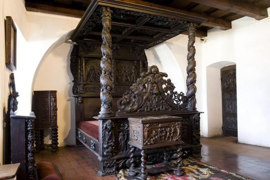
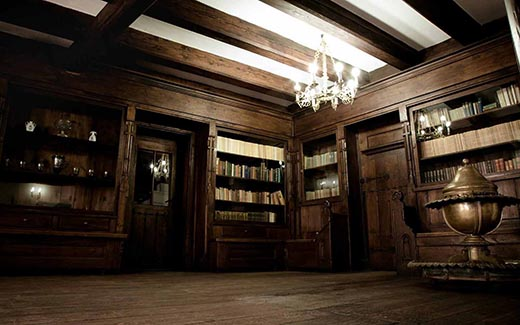

Castelul Bran
Castelul Bran este unul dintre cele mai populare obiective turistice din România. Legenda potrivit căreia castelul a servit drept loc de pierzanie faimosului Dracula este cu siguranță motivul pentru care mulți turiști îi trec porțile. Bran este însă și unul dintre cele mai bine conservate și impresionante castele medievale din România și fostă reședință regală. Se situează la aproximativ 30 de kilometri de oraşul Braşov, pe şoseaua care leagă Braşovul de Câmpulung Muscel, prima capitală a Ţării Româneşti, acolo unde se întâlnesc Munţii Piatra Craiului cu masivul Bucegi.
"Actul de naştere" al cetăţii Bran poate fi considerat privilegiul acordat de coroana maghiară oraşului Braşov la 19 noiembrie 1377, emis la reşedinţa din Altsohl (Zvolen-Slovacia). Documentul emis de cancelaria regelui Ludovic cel Mare (Ludovic I de Anjou) susţinea că "bătrânii, juzii şi juraţii, precum şi întreaga comunitate a saşilor din Scaunul Braşov, nesiliţi şi neconstrânşi, ci de bună voie au promis în mod generos şi unanim de a construi o nouă cetate pe stânca Dietrich", de a o face "cu propriile lor osteneli şi de a tăia pădurea acolo în lung şi în lat după voia noastră, de a dezrădăcina şi nivela, aducând şi furnizând piatră, ciment, lemne necesare la clădirea numitei cetăţi, procurând şi zidari şi cioplitori de piatră şi dulgheri cu propria lor cheltuială". În schimb, regele întărea saşilor uniunea dintre Brasov, "Oraşul Coroanei" (Kronstadt) şi cele 13 sate ale Ţării Bârsei şi le confirma drepturile de folosinţă pentru pădurile, apele şi pământurile acestora.
Ridicarea unei cetăţi regale la Bran a fost dictată de necesitatea apărării trecătorii, o măsură obligatorie evidenţiată nu de o invazie militară peste Carpaţi ci de un conflict zonal, izbucnit între domnitorul Ţării Româneşti şi suveranul maghiar. Însă, în scurt timp, importanţa militară a cetăţii de graniţă a crescut, înfrângerea coaliţiei creştine în bătălia de la Kossovopolje (15 iunie 1389), aducându-i pe otomani la hotarele coroanei maghiare. În acest context, apare primul document care atestă stăpânirea Branului de către Mircea cel Bătrân (1412). Cetatea Branului, primită de domnitorul muntean de la regele maghiar Sigismund de Luxemburg, putea să-i asigure un prim loc de refugiu în cazul unei invazii otomane. La scurt timp după moartea lui Mircea, Sigismund retrage urmaşilor săi controlul asupra cetăţii Bran. Hotărârea regală fiind determinata de instabilitatea politică din Ţara Românească şi de expediţiile de jaf ale turcilor.
În sistemul defensiv organizat de regii maghiari, cetatea Branului trebuia să îndeplinească o funcţie militară, ce pare copleşitoare, nefiind vorba doar de paza împrejurimilor, ci de apărarea şi supravegherea uneia dintre cele mai importante căi de acces în Transilvania. Garnizoana cetăţii era compusă din mercenari. Cronicarul Ioan de Târnava aminteşte la sfârşitul secolului al XIV-lea de "briganţi şi balistari englezi".
Infăţişarea cetăţii la sfârşitul secolului al XIV-lea probabil că era sobră, fără elemente arhitecturale decorative, deoarece utilul trebuia să primeze esteticului. Spaţiul interior era împărţit intre apartamentul castelanului; cel al oaspeţilor; locuinţele garnizoanei şi slujbaşilor; construcţiile destinate activităţii domestice: bucătărie, brutărie, etc.; cămara pentru alimente; magazie şi grajd; locuinţele slugilor; capela, ca loc de adunare obligatorie şi regulată a tuturor locuitorilor cetăţii, oricare le-ar fi fost statutul şi locul in ierarhie. În curtea interioară a fost amenajat un puţ. Fântâna săpată în stâncă era ultima rezervă de apă a apărătorilor cetăţii în timpul asediilor.În stânca dealului a fost scobită o încăpere "tainică şi întunecată": închisoarea. O modalitate de îndeplinire a condamnărilor la moarte se pare că era executarea prin aruncarea de pe metereze în furcile aşezate pe panta nordică a dealului cetăţii.
Braşovenii, cei care în fapt au ridicat cetatea Bran, au fost primii interesaţi în apărarea eficientă a trecătorii, în siguranţa traficului comercial şi, nu în ultimul rând, în eliminarea abuzurilor castelanilor regali şi ale vameşilor. Pentru rezolvarea acestor probleme, soluţia cea mai sigură era trecerea cetăţii sub controlul unui castelan numit de ei.
În anul 1593, cetatea a fost distrusă de explozia depozitului de pulbere. În anul 1617, o puternică furtună a dărâmat o parte din acoperişuri, iar doi ani mai târziu, cetatea a fost afectată de un incediu. Reparaţiile care au urmat se pare că au conturat linia arhitecturală exterioară a cetăţii, transmisă cu modificări minore până în prezent, chiar dacă până în secolul XX, când a avut loc ultima mare intervenţie asupra structurii arhitecturale a fortăreţei, au mai avut loc şi alte restaurări importante (o inscripţie de pe faţada dinspre curtea interioară a turnului nordic atestă o restaurare a cetăţii în anul 1723). Reparaţiile de la începutul secolului al XVII-lea au fost făcute la ordinul "principelui constructor", Gabriel Bethlen (1613-1629). Se pare că acum braşovenii au reconstruit turnul porţii şi turnul rotund, iar turnului principal ("donjonul") i-au fost adăugate elemente decorative renascentiste, arcade duble semicirculare şi creneluri treptate, ornament adaugat şi pe frontalul clădirii alăturate turnului.
În scurt timp, Regina Maria a transformat darul brasovenilor în resedinta sa favorita. Toata viata, Regina Maria a avut o adevarata patima pentru a cladi, pentru a amenaja locuinte. Pentru Ultima romantica amenajarea resedintei de la Bran a fost "o întâmplare minunata si, cu aceiasi însufletire niciodata domolita" s-a apucat sa o "chiverniseasca". O ajuta într-aceasta si Carol Liman (Karel Liman), arhitectul sau preferat (refacerea castelului Bran a fost ultima sa mare realizare profesionala, caci in 1929 avea sa se stinga).
La poalele dealului cetatii, în locul "gradinii castelanului" s-a amenajat un parc, conceput în stil englezesc, cu alei curbe, terase largi în forma de amfiteatru, banci de piatra, arcade înecate de verdeata, fântâni si pavilioane decorate cu vase si statuete. Pe locul mlastinii de la poalele dealului cetatii, a fost amenajat un lac, populat cu pastravi. La dorinta reginei, directorul vânatorilor regale a adus în resedinta din Bran trei lebede din Delta Dunarii.
Desi a cheltuit foarte multi bani pentru restaurarea si întretinerea Branului, regina a fost fascinata de noua resedinta. Castelul a devenit locuibil, s-a creat un confort sigur, vechile guri de tragere au fost transformate în ferestre, a fost lasata mai multa lumina, i s-au reparat galeriile subrede, s-au creat noi camere în diverse colturi ciudate si uriasul pod a fost transformat în spatii locuibile. Însa totul fara a-i lua din maretie, cu grija pentru a se pastra austeritatea si aspectul vechi al locului.
În timpul lucrarilor de amenajare la salonul de muzica, spre marea încântare a reginei, a fost descoperita o scara interioara secreta, sapata în stânca, care facea legatura între podul castelului si etajul I. Dupa reamenajare, cu ajutorul acestei scari, regina ajungea din apartamentul sau (etajul I) direct în biblioteca resedintei (salonul de muzica -etajul III).
Pretutindeni unde a amenajat un interior, regina Maria si-a pus amprenta personalitatii sale, a cautat sa-si impuna "stilul". Iar ea avea o adevarata patima de a împodobi camerele într-un chip neobisnuit si original. În spatele zidurilor groase ale castelului, suverana a colectionat un ciudat amestec de lucruri vechi cu lucruri mai mult sau mai putin rustice: sculpturi, icoane vechi si alte obiecte de cult, covoare orientale si carpete taranesti, vase de bronz si arama, oale taranesti din mai multe tari; lazi si dulapuri, vechi mese grele de stejar, scaune, canapele si paturi. Rezultatul a fost transformarea castelului într-un "mic muzeu plin de comori rare aduse din toate tarile". Dupa 1930, amenajarea castelului fiind aproape terminata, pe domeniu se construiesc câteva cladiri destinate atât familiei regale si administratiei cât si oaspetilor. În primavara anului 1930, în parcul regal a fost ridicata o casa din bârne de lemn, "Casa de Ceai". Între noua cladire si bucataria castelului functiona un funicular. Încaperile vechilor cladiri ale vamii au fost transformate în locuinte pentru personal, garaje, magazii, camera corpului de garda si camere de oaspeti.
Vizitatorii castelului pot admira expoziții de ceramică, trofee de vânătoare, mobilier de epocă și arme și armuri. De asemenea, poți vedea dormitorul Reginei Maria, dormitorul Regelui Ferdinand, salonul de muzică și biblioteca, pentru a numi doar câteva dintre numeroasele încăperi deschise publicului. Iar bonusul este terasa castelului, de unde poți admira o priveliște minunată asupra împrejurimilor.